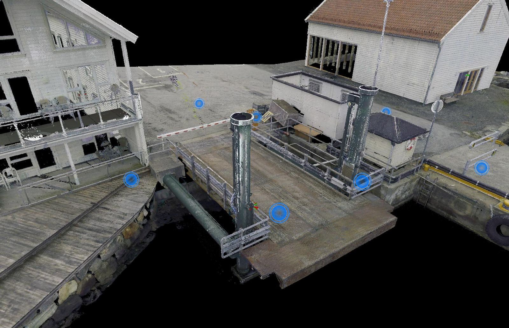
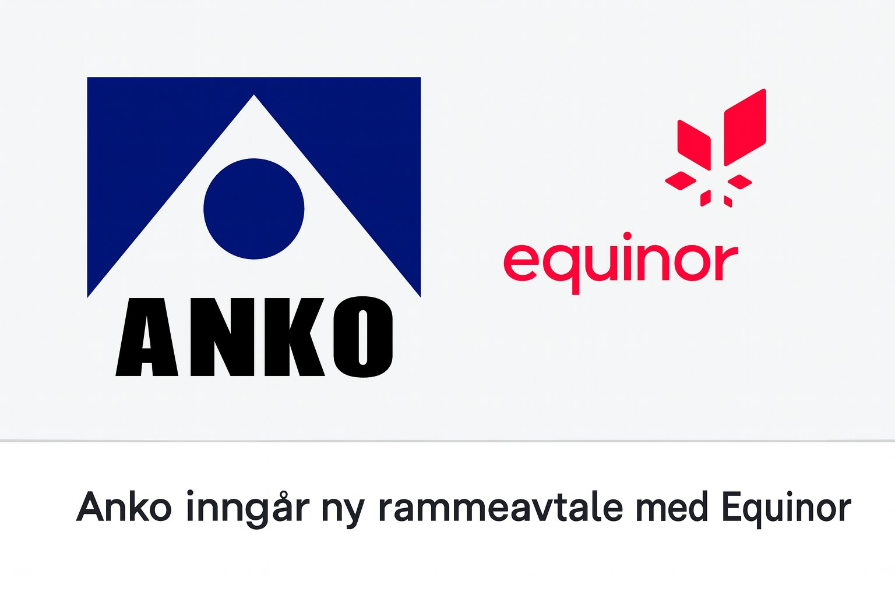
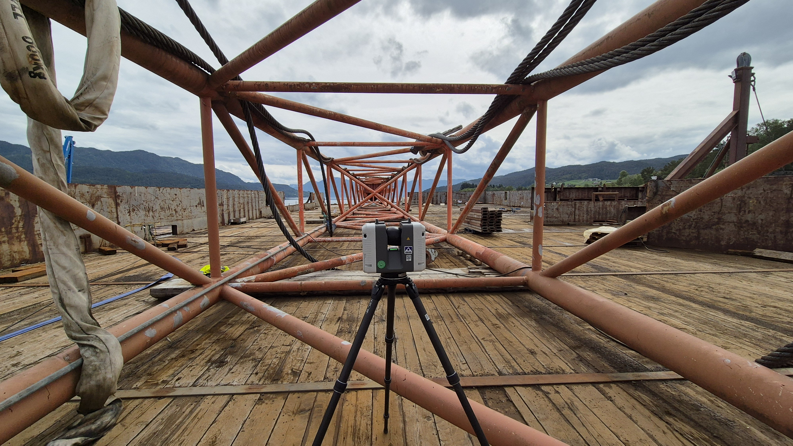
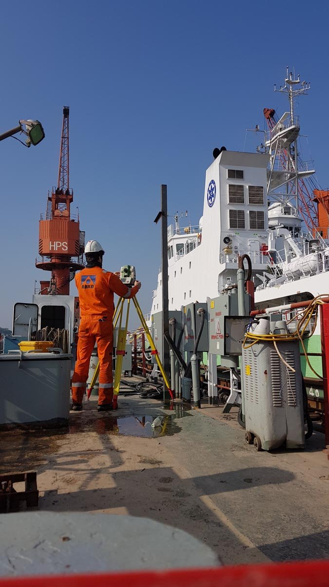

Geomatikk & Oppmåling · Sandnes / Landsdekkende
Presisjon innen geomatikk, industrimåling og 3D-skanning
Siden 1975 har Anko AS levert høypresisjons landmåling, byggstikking, maskinstyring, 3D-laserskanning og dimensjonskontroll til prosjekter på land og offshore.

Dette hjelper vi deg med
Vi leverer gjennomtenkte løsninger med høy faglig standard, forutsigbarhet og personlig oppfølging.
-
01
Landmåling og anleggsstikking
Byggstikking, masseberegning, situasjonskart, matrikkelarbeid og beliggenhetskontroll for bygg- og samferdselsprosjekter.
-
02
Industrimåling og offshore
Høypresisjons dimensjonskontroll, gyro- og sensorkalibrering, båtmåling og posisjonering for olje, gass og havvind.
-
03
3D-laserskanning og digital tvilling
Detaljert punktskyskanning, objektskanning, dronefotogrammetri og underlagsmodeller direkte til BIM.
-
04
Maskinstyring og utstyrsutleie
Etablering av grunnlagsnett, 3D-modeller for anleggsmaskiner samt utleie og support av måleutstyr.
Om Anko AS
Anko AS er en av Norges ledende og eldste frittstående leverandører av oppmålings- og geomatikktjenester, etablert i 1975.
Med kontorer i Stavanger/Sandnes, Bergen, Trondheim, Harstad, Oslo, Østfold og Kristiansand stiller vi raskt med erfarne måleingeniører og bransjens mest moderne måleinstrument.
- Siden 1975 – Over 50 års erfaring
- 7 avdelinger – Landsdekkende
- Land & Offshore – Tverrfaglig miljø

Glimt fra virksomheten
Utvalgte bilder fra våre prosjekter, produkter og arbeidshverdag.


Slik jobber vi
En ryddig og oversiktlig prosess fra første henvendelse til ferdig leveranse.
-
STEG 01
Uforpliktende dialog
Ta kontakt via skjema, e-post eller telefon og fortell kort hva du ønsker hjelp til.
-
STEG 02
Kartlegging og løsningsforslag
Vi går gjennom behovene dine og gir deg konkrete råd, prisoverslag eller avtaler befaring.
-
STEG 03
Trygg gjennomføring
Arbeidet eller leveransen utføres til avtalt tid og pris, med tett oppfølging hele veien.
Klar for en uforpliktende prat med Anko AS?
Send oss en melding i dag, så hjelper vi deg med rådgivning, priser eller et tilbud tilpasset dine behov.
Ta kontakt
Vi ser frem til å høre fra deg. Ta kontakt direkte eller bruk skjemaet, så svarer vi deg raskt.
- Telefon00479910
- E-poststavanger@anko.no
- OmrådeGeomatikk & Oppmåling · Sandnes / Landsdekkende
- ResponstidVi svarer normalt innen én arbeidsdag